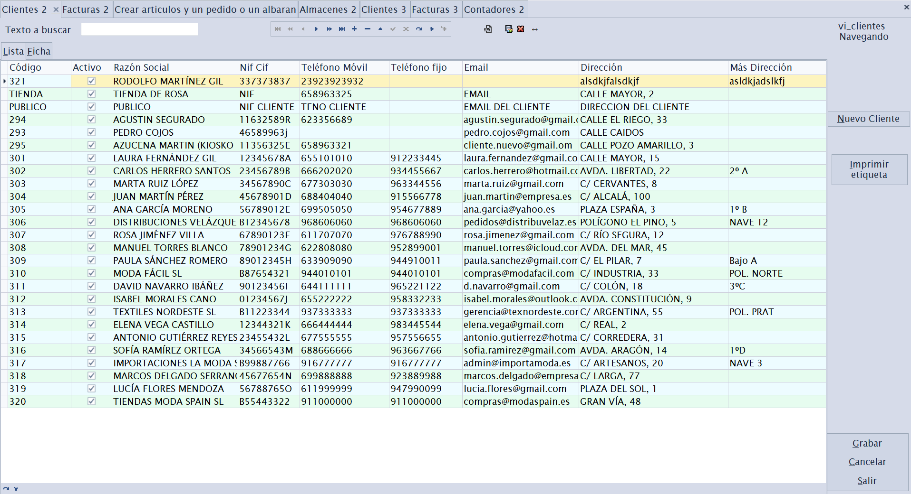
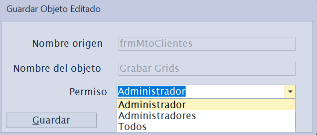
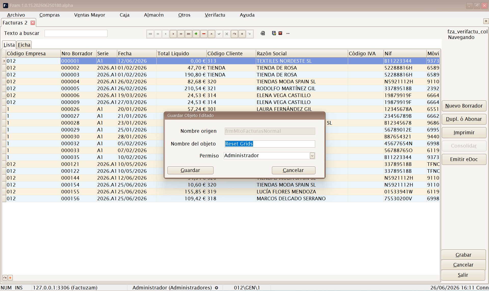
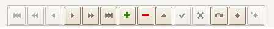
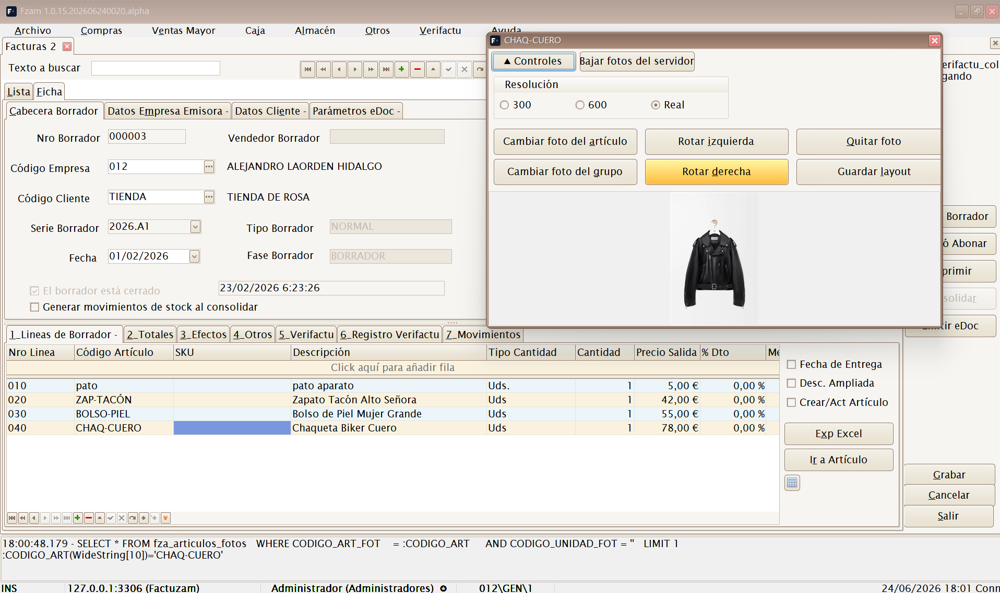
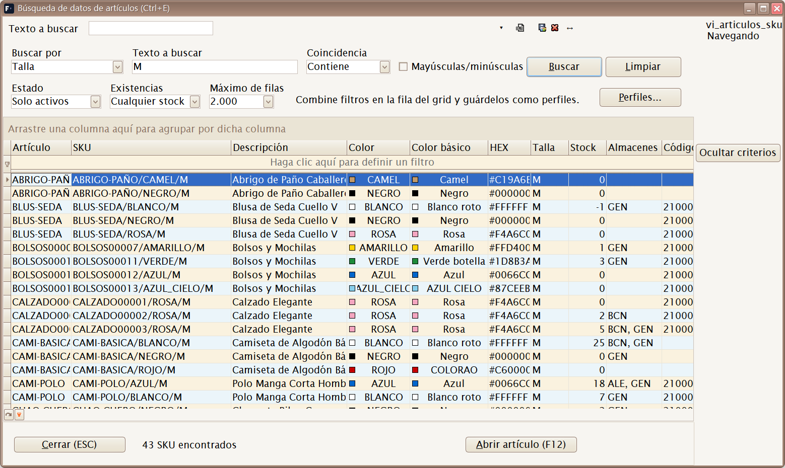

01 · Conceptos comunes a todas las pantallas
Casi todas las opciones de menú abren una pantalla de mantenimiento con la misma estructura. Si entiendes cómo funciona una, las entiendes todas. Este capítulo explica esa estructura común; los capítulos siguientes solo añaden lo específico de cada pantalla.
1. Estructura de una pantalla de mantenimiento
Una pantalla de mantenimiento típica tiene dos pestañas principales:

Pestaña Lista
Muestra una rejilla (grid) con todos los registros de la tabla (clientes, artículos, facturas…). Desde aquí puedes:
- Ordenar por cualquier columna pulsando en su cabecera.
- Agrupar, filtrar y reorganizar columnas (funciones del grid DevExpress).
- Buscar texto en la rejilla.
- Hacer doble clic en una fila para abrir su Ficha.
Guardar la disposición de la rejilla
Puedes personalizar la rejilla a tu gusto (qué columnas se ven, su orden, ancho, ordenación y agrupación) y dejarla guardada para las próximas veces. Se gestiona con estos atajos (y con sus botones equivalentes sobre la rejilla):
| Atajo | Acción | Qué hace |
|---|---|---|
[Alt]+[F12] | Guardar layout | Guarda la disposición actual de la rejilla. Al pulsarlo aparece un diálogo donde eliges el alcance de la grabación (ver abajo). |
[Ctrl]+[F12] | Resetear layout | Borra la personalización guardada y vuelve a la disposición por defecto. También pregunta el alcance (a quién se le resetea). |
[Ctrl]+[F10] | Ajustar anchos | Ajusta automáticamente el ancho de las columnas a su contenido (best fit). Es local y no guarda nada hasta que pulses [Alt]+[F12]. |
Alcance de la grabación (campo «Permiso» del diálogo). Tanto al guardar como al resetear, el diálogo te deja elegir a quién afecta el cambio:
| Opción | Alcance |
|---|---|
| Usuario (por defecto) | Solo a ti. Tu vista personalizada; el resto de usuarios no la ven. |
| Grupo | A todos los usuarios de tu grupo de permisos (p. ej. Cajeros). Útil para fijar una vista estándar del equipo. |
| Todos | A todos los usuarios de la aplicación. Solo disponible si eres administrador (grupo root). |


Por defecto se guarda solo para tu usuario, así que puedes ajustar tu rejilla sin afectar a nadie. Elige Grupo o Todos únicamente cuando quieras imponer la misma vista a más gente; ten en cuenta que Todos sobrescribe la disposición de todos los usuarios y solo lo puede hacer un administrador.
Pestaña Ficha
Muestra el detalle de un único registro con todos sus campos organizados en sub-pestañas (Datos principales, Más datos, etc.). Es donde se da de alta, se consulta y se edita un registro concreto.

Algunas pantallas tienen además una pestaña Perfil (visible solo para administradores) para configurar columnas, captions y comportamiento de la propia pantalla por usuario/perfil.
2. El navegador de registros
En la parte inferior (o lateral) de la pantalla hay una barra de navegación con los botones estándar. Sus acciones son siempre las mismas:

| Botón | Atajo | Acción |
|---|---|---|
| Primer registro | [Ctrl]+[Inicio] | Va al primer registro de la lista (respeta la ordenación del grid). |
| Registro anterior | [RePág] | Retrocede un registro. |
| Registro siguiente | [AvPág] | Avanza un registro. |
| Último registro | [Ctrl]+[Fin] | Va al último registro de la lista (respeta la ordenación del grid). |
| Insertar registro | [Insert] | Crea un registro nuevo en blanco para rellenar. |
| Editar registro | [F2] | Pone en modo edición el registro actual. |
| Eliminar registro | [Ctrl]+[Supr] | Borra el registro actual (pide confirmación). |
| Grabar registro | [F12] | Confirma y guarda los cambios en la base de datos. |
| Retroceder bloque | [Ctrl]+[RePág] | Retrocede un bloque de registros (paginación). |
| Avanzar bloque | [Ctrl]+[AvPág] | Avanza un bloque de registros (paginación). |
En artículos y documentos aparecen además botones específicos:
| Botón | Atajo | Acción |
|---|---|---|
| Foto artículo | [Ctrl]+[F] | Muestra la foto del artículo. |
| Consulta stock | [Ctrl]+[U] | Consulta el stock del artículo actual. |
| Búsqueda de datos | [Ctrl]+[E] | Abre la búsqueda avanzada de artículos y SKU (ver abajo). |
Los atajos del navegador funcionan cuando la pantalla de mantenimiento tiene el foco. Grabar dispone de dos atajos equivalentes:
[F12](botón Grabar registro del navegador) y[Alt]+[G](botón Grabar de acción, ver abajo).
Foto flotante del artículo / SKU
[Ctrl]+[F] abre una ventana flotante con la foto del artículo o SKU que
esté activo en la pantalla. Si cambias de pestaña, de documento o de línea,
la ventana sigue al registro seleccionado.

Desde esa ventana puedes:
- Ver la foto en resolución 300, 600 o real.
- Cambiar la foto del artículo o del SKU/nivel de color seleccionado.
- Quitar o rotar la foto.
- Bajar fotos del servidor si la instalación tiene configurada la descarga en la categoría Fotos de parámetros.
Las fotos se guardan en la carpeta configurada en
appDirFotos. En instalaciones con varios puestos conviene que sea una ruta compartida en red para que todos vean las mismas imágenes.
Búsqueda de datos de artículos (Ctrl+E)
[Ctrl]+[E] abre desde cualquier ventana del programa la búsqueda
avanzada de artículos y SKU: una pantalla de consulta rápida para
localizar referencias por cualquier dato, sin salir de lo que estés
haciendo.

Búsqueda por talla «M»: cada fila es un SKU, con su color, stock y almacenes.Criterios de búsqueda:
- Buscar por — el campo sobre el que buscar: todos los campos, código de artículo, SKU, descripción, talla, color, código de barras, familia, proveedor, referencia de proveedor, temporada, almacén, atributos y propiedades, color básico o proximidad de paleta (encuentra colores parecidos al indicado).
- Coincidencia — contiene, empieza por, es igual a, termina en o no contiene, con opción de distinguir mayúsculas/minúsculas.
- Estado — solo activos, todos o solo inactivos.
- Existencias — cualquier stock, con existencias o sin existencias.
- Máximo de filas — límite de resultados (500 / 2.000 / 5.000).
Sobre la rejilla de resultados se pueden combinar más filtros en la fila de filtro del grid y guardar la combinación como perfil (botón Perfiles...) para repetir búsquedas habituales.
Desde los resultados:
- F12 o doble clic — abre la ficha del artículo seleccionado.
- Menú contextual Añadir a Documento de Trabajo... — apunta el SKU en un Documento de Trabajo.
- Ocultar criterios — pliega la zona de filtros para ver más filas.
- Esc — cierra la ventana y devuelve el foco a la pantalla anterior.
3. Botones de acción
Independientemente del navegador, las pantallas suelen mostrar tres botones
de acción principales. La letra subrayada es su mnemónico ([Alt] +
esa letra):
- Grabar (
[Alt]+[G]) — guarda los cambios del registro en edición. - Cancelar (
[Alt]+[C]) — descarta los cambios no guardados y vuelve al estado anterior. - Salir (
[Alt]+[S]) — cierra la pestaña de la pantalla.
4. Flujo de trabajo: alta, modificación y baja
Dar de alta un registro nuevo:
- Pulsa Insertar registro,
[Insert], (o el botón de alta +). - Rellena los campos en la Ficha. Los campos obligatorios suelen estar marcados o se validan al grabar.
- Pulsa Grabar.
Modificar un registro existente:
- Localízalo en la Lista y ábrelo en la Ficha (doble clic).
- Opcionalmente, puede omitirse, pulsa Editar registro ó F2.
- Cambia lo necesario y pulsa Grabar ó F12.
Dar de baja un registro:
- Sitúate sobre el registro.
- Pulsa Eliminar registro y confirma o
[Ctrl]+[Supr].
Muchas tablas no se borran realmente, sino que se desactivan mediante una marca Activo (S/N). Así se conserva el histórico y la integridad de documentos antiguos. Cuando exista esa marca, prefiérela al borrado.
5. Búsquedas
Las pantallas ofrecen dos formas de buscar:
- Buscar BBDD — busca en toda la base de datos según el texto introducido en Texto a buscar. Útil para encontrar un registro que no está cargado en la página actual.
- Buscar Grid — busca solo dentro de los datos ya cargados en la rejilla.
[Ctrl]+[A]:atajo de menú que abre la pantalla de Artículos (igual que[Ctrl]+[P]abre Proveedores o[Ctrl]+[K]abre Clientes). Cada mantenimiento tiene su propio atajo de menú; los encontrarás indicados en el capítulo de cada menú y resumidos en Atajos de menú.
6. Exportar a Excel e imprimir
- La mayoría de listas permiten exportar a Excel el contenido de la rejilla (con los filtros y columnas visibles en ese momento).
- Los documentos (facturas, albaranes, pedidos…) y los informes generan vistas previas imprimibles (FastReport) desde las que se imprime o se exporta a PDF.
7. Atajos de menú
Cada opción de la barra de menú tiene un atajo de teclado que abre esa pantalla directamente, estés donde estés. Estos atajos se indican también junto a cada opción en los capítulos siguientes.
Archivo
| Pantalla | Atajo |
|---|---|
| Empresas | [Ctrl]+[E] |
| Almacenes | [Ctrl]+[L] |
| Clientes | [Ctrl]+[K] |
| Proveedores | [Ctrl]+[P] |
| Artículos | [Ctrl]+[A] |
| Tarifas | [Ctrl]+[T] |
| Familias | [Ctrl]+[N] |
| Paises | [Ctrl]+[Alt]+[L] |
| Unidades de Medida | [Ctrl]+[Alt]+[U] |
| Propiedades | [Ctrl]+[Alt]+[Y] |
| Tipos de Variaciones | [Ctrl]+[Alt]+[T] |
| Colecciones de Atributos | [Ctrl]+[Alt]+[S] |
| Atributos básicos | [Ctrl]+[Alt]+[B] |
| Invocar login | [Shift]+[Ctrl]+[L] |
| Salir | [Alt]+[F4] |
Compras
| Pantalla | Atajo |
|---|---|
| Sesiones (crear artículos y documento) | [Ctrl]+[S] |
| Pedidos | [Shift]+[Ctrl]+[P] |
| Albaranes | [Shift]+[Ctrl]+[A] |
| Borradores de compra | [Shift]+[Ctrl]+[Alt]+[F] |
| Efectos de pago | [Ctrl]+[Alt]+[C] |
Ventas Mayor
| Pantalla | Atajo |
|---|---|
| Borradores | [Ctrl]+[Alt]+[F] |
| Pedidos | [Ctrl]+[Alt]+[P] |
| Albaranes | [Ctrl]+[Alt]+[A] |
| Listados de ventas | [Ctrl]+[Alt]+[V] |
Caja
| Pantalla | Atajo |
|---|---|
| Menú de Caja | [F5] |
| Parámetros de Caja | [Ctrl]+[F5] |
| Formas de Pago Caja | [Shift]+[Ctrl]+[Q] |
| Depósitos de Clientes | [Ctrl]+[D] |
| Histórico de Pagos de Caja | [Shift]+[Ctrl]+[J] |
| Histórico de Vales | [Shift]+[Ctrl]+[V] |
| Histórico de Operaciones | [Shift]+[Ctrl]+[O] |
| Histórico de Arqueos | [Shift]+[Ctrl]+[H] |
| Borradores Simplificados | [Shift]+[Ctrl]+[F] |
Almacén
| Pantalla | Atajo |
|---|---|
| Movimientos de almacén | [Ctrl]+[M] |
| Inventarios | [Ctrl]+[Alt]+[I] |
Otros
| Pantalla | Atajo |
|---|---|
| Parámetros del entorno | [Ctrl]+[F10] |
| Grupos de IVA | [Ctrl]+[O] |
| Impuesto IVA | [Ctrl]+[I] |
| Contadores | [Ctrl]+[R] |
| Formas de pago documentos | [Shift]+[Ctrl]+[G] |
| Usuarios | [Ctrl]+[H] |
| Empleados | [Ctrl]+[Alt]+[E] |
| Grupos | [Ctrl]+[J] |
| Perfiles | [Ctrl]+[W] |
| Permisos | [Ctrl]+[Q] |
| Hacer Copia de Seguridad | [Ctrl]+[Y] |
| Recuperar Copia de Seguridad | [Ctrl]+[Z] |
| Generador de Procesos | [Ctrl]+[G] |
8. Campos de auditoría
Todos los registros guardan automáticamente quién y cuándo los creó y los modificó por última vez (instante de alta/modificación y usuario). No hay que rellenarlos: la aplicación los gestiona sola. Son útiles para trazabilidad y soporte.